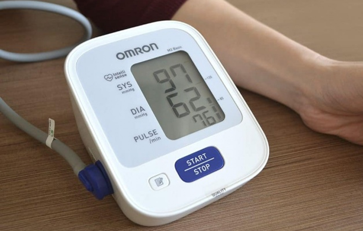

-
 ElzaLander10 minute pentru a citi
ElzaLander10 minute pentru a citi
Salvarea celor care se estompează:scăpăm de hipotensiune în 6 minute
Bună ziua, dragii mei.
Cu un an în urmă, am condus un stil de viață acasă:forțele abia au fost sufuciente pentru muncă și un minim de treburi casnice. Oboseala cronică, durerile de cap chinuitoare, greața și alți însoţitori ai hipotensiunei m-au transformat într-o bunică sedentară cu mult înainte de pensionare. Acum am 54 de ani. Alerg dimineața, merg la fitness, fac sport ecvestru și mă gândesc serios să învăț surfing. Și asta pentru că acum un an am găsit o modalitate de a scăpa de hipotensiune o dată pentru totdeauna.

Totul a început cu greață
De când eram copil, îmi era rău de maşină tot timpul. Nu era vorba de nici o lectură în transport:M-am simțit atât de rău că nu am putut vorbi. Singura modalitate de a ajunge la destinație și, îmi pare rău, nu de a vomita totul în jurul, au rămas doar pastile.
Peste 30 de ani, durerile de cap s-au adăugat la această maladie. Nu pot spune că a fost o durere obișnuită, amețeli sau presiune în temple. A fost o senzație naturală parcă craniul meu era în nicovală. În același timp, un perforator a mânuit în urechile, focuri de artificii au explodat în fața ochilor, iar eu deveneam o asemănare în miniatură a planetei:de culoare verde și mă învârteam în jurul axei mele.
Am avut senzaţii de greaţă, totul plutea în jurul meu, leșinam. Pastile, apa – tot ce a încercat să intre în corpul meu, am vomitat. Această stare nu putea fi decât așteptată în poziția culcat pe spate. De aproape o zi să nu mă mișc - și sunt din nou o persoană normală.
Până la 45 de ani, astfel de atacuri au avut loc o dată pe an și jumătate. Mai aproape de 50 de ani ei au devenit mai frecvente:aceștia s-au transformat într-o problemă serioasă, destul de deranjantă pentru a trăi.
 Tensiunea scăzută pentru mine a devenit de mult o normă
Auto-medicație:suișuri și coborâșuri cu daune
Metodele alternative în lupta împotriva hipotensiunii sunt un fenomen schimbător și periculos. Unele modalități ajută într-adevăr în caz de urgență (cafea dublă, de exemplu), iar altele păgubesc în mod natural.
Am încetat să practic auto-medicația atunci când o creștere bruscă a puterii după ce am luat energizanți naturale m-a dus drept la traumatologie.
 Fractura din cauza hipotensiunii este prea serios!
Fractura din cauza hipotensiunii este prea serios!
Din cauza ploii, m-am simțit groaznic și nu am putut să mă mișc pentru a ieși la serviciu. Capul părea să se spargă, ca o crustă de nuc uscat. Somnul în această stare este imposibil, așa că a trebuit să mă adun cu forțele și să mă grăbesc la lucru.
Cappuccino de casă, câteva pastile de migrenă și eleutherococcus într-o singură înghițitură mi-au ajutat să-mi deschid ochii și chiar mi-au ridicat starea de spirit. M-am simțit cam bine dispusă și energică, creierul meu a fost plin de activitate.
În această stare, am petrecut aproximativ trei ore. La a patra oră, am vrut să sărbătoresc mini-victoria mea asupra hipotensiunii. M-am îndreptat spre mașină de cafea, am făcut câțiva pași și m-am prăbușit inconștientă. Așa s-a întâmplat prima mea fractură:am căzut pe braț, am rănit două articulații pe mână și m-am jurat să nu mai experimentez niciodată.
 Fotografie de mâna
Fotografie de mâna
O boală care nu este percepută în serios
Tensiunea pe care am avut-o întotdeauna a fost scăzută, dar ca atare diagnosticul nu mi-a fost pus. Plângerile privind dependența teribilă de vremea au fost terminate cu recomandări medicale de a mă odihni mai mult, de a fi mai puțin nervoasă și de a bea cafea din când în când în scopuri terapeutice.
Cel mai neplăcut în hipotensiune este că nu există nici un remediu ca atare. Există pastile pentru dureri de cap (acestea nu ajută, dar există), de greață, de la rău de mașină, dar pastile pentru hipotensiune arterială nu au fost încă inventate. Dar au inventat un dispozitiv care este mai bun decât orice medicament, care dă o creștere a puterii, ameliorează durerea de cap, stabilizează tensiunea și, de fapt, scapă de hipotensiune.
 Cu hipotensiune arterială, vasele se îngustează, circulația sângelui încetinește, are loc înfometarea cu oxigen
Cu hipotensiune arterială, vasele se îngustează, circulația sângelui încetinește, are loc înfometarea cu oxigen
Salvarea hipotensivilor
Colega care mi-a chemat o ambulanţă și mi-a ajutat să mă trezesc după leșin, mi-a povestit despre stabilizatorul de tensiune АВР-051. Acesta este un dispozitiv care duce la tonul vasele înguste la hipotensivi cu ajutorul semnalelor de curent. O persoană abia îi simte, ei doar salvează corpul de la o mulțime de boli. Terapia cu curent ajută bine la:
- dureri de cap, migrenă;
- oboseală cronică;
- somn perturbat;
- nervozitate, iritabilitate;
- tahicardie;
- boli cardiovasculare.
Abia am crezut în succesul dispozitivului, dar am luat stabilizatorul de la colega pentru a-l încerca. Două săptămâni mai târziu, în timp ce eram încă în concediu medical, m-am dus la oficiu și cu o mână mi-am făcut atât de mult de lucru în câteva ore ca nu am mai făcut cu două.

Doamne, în sfârșit am puteri! Am început să mă trezesc dimineața odihnită și am încetat să mai visez toată ziua pentru a se relaxa. În acea perioadă, câteva zile au fost de ploaie, dar în niciuna dintre ele nu mi-a durut capul. De la stația meteo pe picioare, m-am transformat într-o persoană obișnuită, cu o tensiune normală – o persoană plină de putere și de dorinţa copleşitoare de a face tot ceea ce mi-a lipsit înainte.
Unde se poate obține dispozitivul pentru hipotensiune
Desigur, am comandat și eu un stabilizator de tensiune pentru mine. Conform instrucțiunilor, cursul de tratament este de doar două săptămâni (și am trecut acest curs cu aparatul colegei și am simțit deja îmbunătățiri).
Pentru a menține sănătate, cursurile sunt de dorit să se repete o dată la 4-6 luni. Totuși, suntem supuși activităților fizice și poverilor morale în fiecare zi, suntem stresați și nu întotdeauna mâncăm perfect. Prin urmare, în trusa de prim ajutor acasă stabilizatorul este o chestie indispensabilă. Poate fi folosit de la caz la caz (când capul te doare, de exemplu) și pentru a trata o serie de alte boli.

Despre ce alte boli tratează ABP-051, puteți citi pe site-ul producătorului.
Sincer doresc sănătate fiecărui cititor.
Accesați site-ul producătorului pentru a primi stabilizator de tensiune


Buletin informativ săptămânal
Abonați-vă pentru știri independente
de la cei mai buni bloggeri de LiveJournal